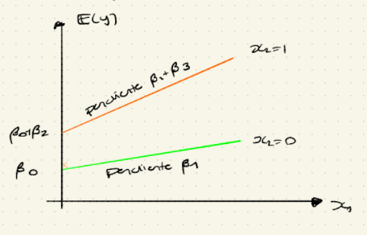
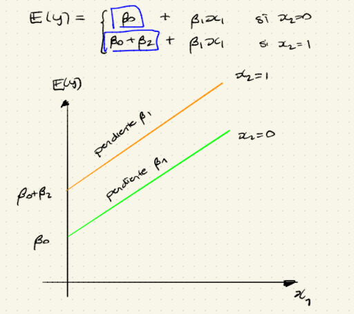
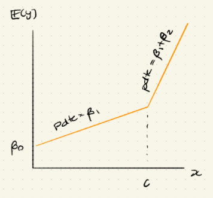
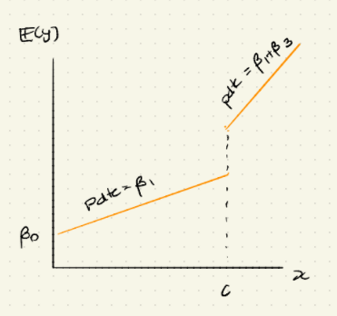

Veremos el modelo de regresión
El MLR proporciona mayor flexibilidad para describir la relación entre la respuesta y las variables explicativas.
El reto ahora es cómo representar diversos predictores (variables explicativas / covariables) de manera adecuada. (este “problema” no se presentaba en SLR)
numéricas
categóricas
La manera más sencilla de representar en un modelo de regresión a una variable numérica es asignar un coeficiente de regresión a esta variable, i.e.
\[ y = \beta_0 + \beta_1x + \text{ términos que no involucran a } x + \epsilon \]
En esta especificación, en una unidad de incremento en \(x\) se espera un incremento en \(y\) de \(\beta_1\) unidades.
\[ y = \beta_0 + \beta_1(x+1) + \text{ términos que no involucran a } x + \epsilon \]
Sin embargo, hay situaciones en las que la relación entre \(x\) y \(y\) no parece ser lineal. Entonces, podría ser deseable “expedir” la función de regresión con potencias de \(x\), llevando a una especificación que se conoce como regresión polinomial.
\[ y = \beta_0 + \beta_1x + \beta_2x^2 + ... + \beta_mx^m + \text{ términos que no involucran a } x + \epsilon \]
Para algún \(m \in \mathbb{N}_+\)
En el modelo de regresión polinomialm no hay linealidad en \(x\) sino en los primeros parámetros \(\beta_j'^s\), por eso se considera un modelo lineal.
Una pregunta que surge naturalmente es cómo determinar el grado del polinomio, i.e. cómo determinar \(m\). Lo estudiaremos más adelante mediante algunos métodos de selección de modelos.
Hay que representarlas de manera cuantitativa, una manera de hacer esto es la siguiente
Para una variable categórica con \(r\) niveles i.e. con \(r\) categorías (\(r\geq 2\))m se necesita introducir \(r-1\) variables indicadoras: \(x_1, x_2, ..., x_{r-1}\) donde a cada una se le asigna un coeficiente de regresión (por separado), donde
\[ x_i = \begin{cases} 1, \text{si la categoría es } i,\\ 0, \text{ c.o.c.} \end{cases} \]
Ejemplo:
$$ x_{} {}\
x_1 =
\[\begin{cases} 1, \text{si } x_{\text{cat}} \text{ es perro},\\ 0, \text{ c.o.c.} \end{cases}\]\
x_2 =
\[\begin{cases} 1, \text{si } x_{\text{cat}} \text{ es caballo},\\ 0, \text{ c.o.c.} \end{cases}\]$$
| Nivel de la variable categórica | \[ x_1 \] | \[ x_2 \] | \[ ... \] | \[ x_{r-1} \] |
|---|---|---|---|---|
| \[ 1 \] | 1 | 0 | \[ ... \] | 0 |
| \[2\] | 0 | 1 | \[ ... \] | 0 |
| \[ ... \] | ||||
| \[ r-1 \] | 0 | 0 | \[ ... \] | 1 |
| \[ r \] | 0 | 0 | \[ ... \] | 0 |
Ejmplo:
Si \(x = \begin{cases} 1, \text{ para fumadores}\\ 0, \text{ para no fumadores} \end{cases}\) Si el estatus de consumo de tabaco es la única variable explicativa, la ecuación del modelo de regresión es:
\[ \mathbb{E}(y) = \beta_0 +\beta_1x = \begin{cases} \beta_0 +\beta_1, \text{ para fumadores}\\ \beta_0, \text{ para no fumadores} \end{cases} \]
Observación: no es necesario definir una variable indicadora \(x' = \begin{cases} 1, \text{ para fumadores}\\ 0, \text{ para no fumadores} \end{cases}\) para indicar a los no-fumadores. Si se definiera dicha variable que \(x+x'=1\). Dicha relación lineal perfecta entre \(x\) y \(x'\) desestabilizará el proceso de estimación, esto se conoce como colinealidad y se estudiará más adelante.
El nivel que se excluye en la descomposición en variables indicadoras se comoce como nivel baseline ó nivel de referencia.
Se se escoge a “no-fumador” como baseline, el coeficiente \(\beta_0\) se puede interpretar como el valor de \(\mathbb{E}(y)\) cuando la observación es “no-fumador” y \(\beta_1\) captura la diferencia promedio en \(\mathbb{E}(y)\) entre un fumador y un no-fumador.
Esta codificación del estatus de fumador no es la única. Se puede asignar a “fumador” como un nivel baseline ó utilizar una codificación \(-1/1\). Bajo diferentes codificaciones sus estimaciones parametrales y sus interpretaciones difierirán, aunque las predicciones serán las mismas.
Si el nivel baseline es “fumadores” \(x' = \begin{cases} 0, \text{ para fumadores}\\ 1, \text{ para no fumadores} \end{cases}\) , la ecuación del modelo se convierte en:
\[ \mathbb{E}(y) = \alpha_0 + \alpha_1x = \begin{cases} \alpha_0, \text{ para fumadores}\\ \alpha_0 +\alpha_1, \text{ para no fumadores} \end{cases} \]
En este caso, \(\alpha_0\) es el valor esperado de la respuesta para fumadores y \(\alpha_1\) representa el incremento en \(\mathbb{E}(y)\) para un no fumador, comparado con un fumador.
Para relacionar la estimación de parámetros en ambas codificaciones se usa el hecho de que \(x' = 1-x\), entonces
\[ \mathbb{E}(y) = \alpha_0 + \alpha_1x' = \alpha_0 + \alpha_1(1-x)\\ =\underbrace{(\alpha_0 + \alpha_1)}_{\beta_0} + \underbrace{(-\alpha_1)}_{\beta_1} x \]
De aquí que \(\hat{\beta_0} = \hat{\alpha_0} + \hat{\alpha_1}\) y \(\hat{\beta_1} = -\hat{\alpha_1}\)
Sin importar si la codificación es \(0/1\) ó \(1/0\), las predicciones son las mismas:
\[ \bar{y} = \underbrace{\hat{\beta_0} + \hat{\beta_1} \cdot 1}_{\text{valor ajustado}\\ \text{bajo codificación 1/0}} = (\hat{\alpha}_0 + \hat{\alpha_1}) - \hat{\alpha_1} = \hat{\alpha}_0 = \underbrace{\hat{\alpha_0} + \hat{\alpha_1} \cdot 0}_{\text{valor ajustado}\\ \text{bajo codificación 0/1}} \\ \bar{y} = \underbrace{\hat{\beta_0} + \hat{\beta_1} \cdot 0}_{\text{valor ajustado}\\ \text{bajo codificación 1/0}}= \hat{\beta}_0 = \hat{\alpha}_0 + \hat{\alpha_1} = \underbrace{\hat{\alpha_0} + \hat{\alpha_1} \cdot 1}_{\text{valor ajustado}\\ \text{bajo codificación 0/1}}\\ \therefore \text{Las preicciones son las mismas} \]
Si se usa la codificación 1/-1 (en vez de 1/0 ó 0/1) entonces
\[ x^n = \begin{cases} 1 \text{ para fumadores,}\\ -1 \text{ para no fumadores}\\ \end{cases} \]
La ecuación del modelo se convierte en
\[ \mathbb{E}(y) = \gamma_0 + \gamma_1x'' = \begin{cases} \gamma_0 + \gamma_1 \text{ para fumadores,} \\ \gamma_0 - \gamma_1 \text{ para no fumadores}\end{cases} \]
Esta codificación 1/-1 tiene la “ventaja” de hacer al intercepto \(\gamma_0\) el “promedio global” de \(y\) para todos los individuos ognorando el efecto de fumado/no-fumador. Además \(\gamma_1\) es la cantidad que los fumadores tienen adicional al promedio y \(\gamma_1\) también es la cantidad que los no-fumadores tienen faltante al promedio.
Desde el punto de vista computacional, es conveniente seleccionar al nivel más común (la de mayor frecuencia) como el nivel baseline.
Hasta el momento, sólo se han considerado modelos en los que la relación entre la respuesta y la variable explicativas es aditiva.
\[ \mathbb{E}(y) = \beta_0 + \beta_1 x_1 + \beta_2 x_2 \]
Sin embargo, también podemos hacer una especificación de la forma.
\[ \mathbb{E}(y) = \beta_0 + \beta_1 x_1 + \beta_2 x_2 +\beta_3 x_3 \]
Aquí \(x_3 := x_1 x_2\) se conoce como variable de interacción y se le trata como una variable explicativa adicional con un coeficiente de regresión por separado \(\beta_3\)
Obsérvese que, incrementar una unidad en x_1
\[ \beta_0 + \beta_1(x_1+1) + \beta_2x_2 +\beta_3(x_1+1)x_2\\ = \beta_0 + \beta_1x_1+\beta_1 + \beta_2x_2 +\beta_3x_1+\beta_3x_2\\ =\beta_0 + \beta_1x_1 + \beta_2x_2 +\beta_3x_1+(\beta_3x_2 +\beta_1) \]
Equivalentemente
\[ \frac{d}{dx_1}\mathbb{E}(y) = \frac{d}{dx_1} (\beta_0 + \beta_1 x_1 + \beta_2 x_2 +\beta_3 x_1x_2) = \beta_1 +\beta_3x_2 \]
Es decir, el incremento es una unidad en \(x_1\) incrementará a \(\mathbb{E}(y)\) en \(\beta_1 +\beta_3x_2\) (que depende de \(x_2\))
Por lo tanto, el impacto de cada \(x\) varía con en valor tomado por la otra variable explicativa y se dice que \(x_1\) y \(x_2\) interactúan entre sí para afectar \(\mathbb{E}(y)\).
La interacción entre una variable categórica y una continua tiene una interpretación geométrica muy importante, que no se puede dar sólo con variables continuas.
Considérese un modelo MLR con una variable explicativa continua \(x_1\), una variable binaria \(x_2\) y una \(x_1 x_2\). La ecuación del modelo es:
\[ \mathbb{E}(y) = \beta_0 + \beta_1x_1+\beta_2x_2+\beta_3x_1x_2\\ = \begin{cases} \beta_0 +\beta_1x_1, \text{ si }x_2 = 0\\ (\beta_0 + \beta_2) + (\beta_1 + \beta_3)x_1, \text{ si }x_2 = 1 \end{cases} \]
Se puede ver a éste como dos modelos SLR por separado: una para \(x_2=0\) y otro para \(x_2=1\).
Obsérvese que ambos modelos tienen diferentes interceptos y diferentes pendientes.

¿Qué pasa si \(\beta_3 = 0\)? Es decir, si no hay interacción. La ecuación de modelo se convierte en:

Para el grupo baeline (i.e. \(x_2 = 0\)). El incremento en una unidad es \(x_1\) incremento a \(\mathbb{E}(y)\) a \(\beta_1\)
Para el grupo \(x_2 = 1\). El incremento es una unidad en \(x_1\) incrementa a \(\mathbb{E}(y)\) en \(\beta_1 + \beta_3\)
Si \(\beta_3 \neq 0\), el efecto de \(x_1\) sobre \(y\) difiere de acuerdo a si \(x_2 = 0\) ó \(x_2 = 1\) … una manifestación de la interacción.
Si \(\beta_3 = 0\), la interacción desaparece y simplemente se están ajustando 2 rectas paralelas (con diferentes interceptos) a los datos.
En \(\mathbb{E}(y) = \beta_0 + \beta_1x_1 +\beta_2x_2 + \beta_3x_1x_2\) es poco común que
\[ \underbrace{\beta_3 \neq 0}_{\text{evidenciado por una estadística grande ó un p-value pequeño.}} \text{ y } \underbrace{\beta_1 = \beta_2 = 0}_{\text{con la comesp prueba estadística}} \]
Es decir, el efecto puede ser real pero el de \(x_1\) y \(x_2\) se insignificante. En este caso se apela a lo que se conoce como “principio jerárquico” y se incluye no sólo \(\beta_3\) sino también \(\beta_1\) y \(\beta_2\) para facilitar la interpretación.
En ciertas aplicaciones puede ser deseable que la variable respuesta muestre cambios abiertos en el comportamiento sobre diferentes intervalos de la variable explicativa (que se conoce como “rompimiento estructural”).
En el caso en el que una variable explicativa es categórica ya se explicó (un quiebre por cada nievel). Esto también se puede estudiar como una variable explicativa continua.
Considérese un modelo de variable explicativa \(x\).
Sea \(z = 1_{\{x\geq c\}}\) para algún \(c \in \mathbb{R}\).
Considérese la función de regresión:
\[ \mathbb{E}(y) = \beta_0 + \beta_1x + \beta_2 z(x-c)\\ = \beta_0 + \beta_1x + \beta_2 (x-c)_+ \text{ donde } u_+ := \max\{u ,0\}\\ =\begin{cases} \beta_0 + \beta_1x \text{ si } x<c, \\ (\beta_0 -\beta_2c) + (\beta_1 +\beta_2)x \text{ si } x\geq c \end{cases} \]
La pendiente de la función de regresión cambia abruptamente de \(\beta_1\) a \(\beta_1+\beta_2\) en \(x=c\)
Dicho modelo se puede ver como un modelo MLR con dos variables explicativas \(x\) y \((x-c)_+\) y la inferencia se lleva a cabo como se hace normalmente.
Con este modelo se obtiene una sola función de regresión formada por 2 rectas conectadas continuamente en \(x = c\) (que se conoce como kink [torcedura]). Por esta razón, a este modelo se le conoce como modelo de regresión lineal pice wise.

La función de regresión en un modelo de regresión lineal picewise no necesita ser continua.
Una función de regresión con saltos resultará de “interactuar” una variable explicativa continua \(x\) con la variable dummy \(z = 1_{\{x > c\}}\)
La función de regresión es:
\[ \mathbb{E}(y) = \beta_0 + \beta_1x + \beta_2 z + \beta_3zx\\ =\begin{cases} \beta_0 + \beta_1x \text{ si }z = 0 \iff x<c, \\ (\beta_0 +\beta_2c) + (\beta_1 +\beta_3)x \text{ si } z =1 \iff x\geq c \end{cases} \]
Que consiste en dos líneas rectas que generalmente no se conectan, divididas en \(x = c\).
